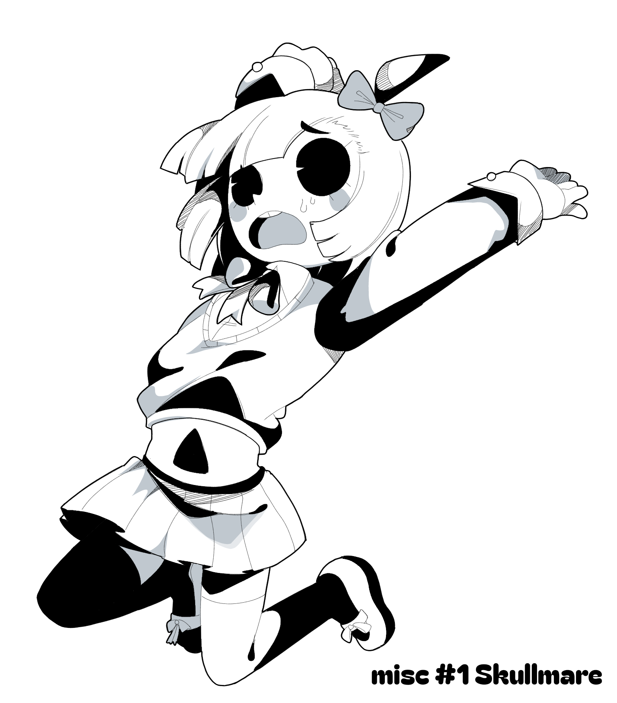
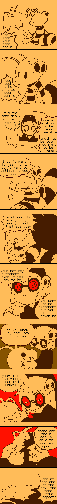
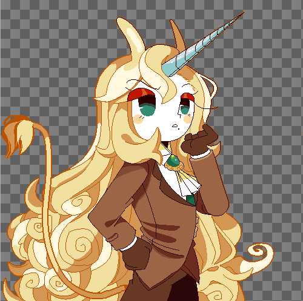
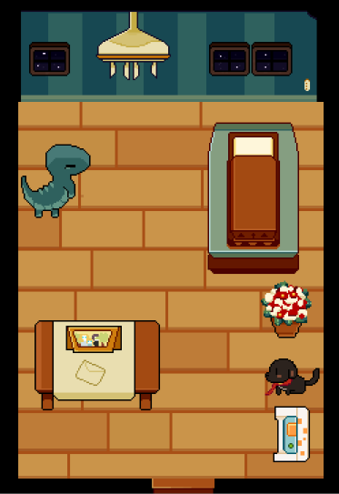
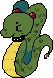
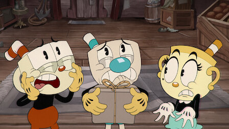
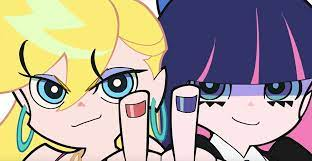

Diary Note 17#
well, what can i say theres not toomuch to give away today. than that i only started to now be able to properly draw on the pc
in paintsool sai 2. its good program for the use of my artwork. some functions are hard to do tho but its geting better and i couldnt be ever more joyful.. right cant i? i wanted to make a tuttorial on project and html work but it seems that it might take some time to finish that up. meanwhile i started to write pechis story. part of me also thinks publizing it on webtoon perhaps to spread my medium range... but thats something later to think about.
exams are coming up need to do better.


Diary Note 16#
I do have to preface this, that it has been asked why some of the characters arent back?
well the particular reason is not because of the design choices of style, but that their fit does not either fit the lore, or there are genuinly anatomical mistakes that need to be fixed. therefore some characters are not out yet. but they will come back.
other than that, the dtne past artworks that are lore relevant are back!
The manual got updated with the current characters!
again thank you for he curiouscat fans for helping me fix the bugs on my website, im very grateful for it
Diary Note 15#
- Slowly changing back to my og self
- redrawing artworks and doing milestones again
Deathenize is now fully 15 plus, i wont be drawing nsfw,
the gameboy has been reduced to 100 characters max :D

its suprising that im now able to draw poperly since i gave up being original
Diary Note 14#
- some of the characters portrait differ from style, and apologies for that. im refraining myself from editing them until i have a sizable amount of characters.. im quite testing to see what works for me you know..
i cant proceed with the game (sad) that i was busy making. school gets in the waya and the finals i near, i will have to proceed with it when summer holidays hit! still thank you for enjoying skullmare
Diary Note 13#
So an update i am rewriting the manual and theres already some progress, gathering imporant information and getting some things done! more will be added soon : D
So i think im starting to have trouble writing my large stories since they inlove allot of lore and i think it is a bit of a terrible thing to start off with. one weird thing that i also wanted to do was join a game project to get also more expirience making games.. only for the owner, guy to come out as a writer. err everything seems a bit mismanaged in that group so whatever comes off there will see how that happens, other than thats my little story that im planning involves something with worms! funny right :D. het zijn hele simpele dieren zeggen ze en ze zijn best interressant!! even tho they can be funny and freaky a little. love them wriggly creatures stay tuned!


Diary Note 12#

Diary Note 11#


rough doodles
Diary Note 10#

Diary Note 9#
I changed my name back to deathenize because there is just toomany people that know me by that name for hat work, so itd be a dumb choice for me leave that, you can still call me mal/Ghosticface or Skullmare but graveyard citizen and dethenize are the names of the project itself. Other than that im glad that its now easier creating stories and coming up with description for my characters, it really shows that aslong you keep practicing and experimenting that things will eventually figure out or open itself
Im sorry if i ahve been late with replying to comments on twitter, my friends rn have adviced that i should dim down on it as it clogs mentions and might give viewers a bit toomuch leeway with the way they could treat me, have been lately getting weird back handed/ meanish/ weirdish comments on other socials that make me a bit annoyed , upset and sad. tho i dont feel speaking about it toomuch. other than that i cant really rn give the reason why i moved accounts. it is not adviced for me to talk about it. but just wanted to say its getting better. there comes good days after depressing times and im glad the support graveyard citizen has received. i might open a survey soon to get feedback from yall. setting thinggs up!! and im glad that all of you guys enjoy my works
While strawpage is orignally a joke, i do plan to do something with it either later or sooner, but that will be for another time

Diary Note 8#
i dont exactly have a schedule, i think of planning something and then i make it or see what i can do. i do not have an order on what story i create or resume just to let you know they exit, all my characters will come back. a thing to note is that i scrapped the rule of making 100 characters a year, due to the system i now made. there isnt any specifc rule now anymore... i just make the portrait when i feel like the time reaches!
Diary Note 7#
Charachter design planning


Diary Note 6#

Mental torment
Diary Note 5#


In progress making a short game, before i make a big game, want to get familliar with how things work. i have huge ideas for it. heres valerians sprite and his room showcase
Diary Note 4#

inactive on twitter, sorry for responding on comments late. overall better for my mental health
Diary Note 3#

Diary Note 2#
My new stylistic choices look quite unique.
It's a weird combination of what I wanted to have.
I was not sure what I wanted, so these came quite by luck.
It's interesting that by watching Panty and the Cuphead show,
it formed a new kind of aesthetic.
I like it this time.


mixing cartoons from the 2000s and 1930s, gives something new?
still quite unsure, but its the best things
that i rn could come up with
Diary Note 1#
I obviously have a problem, and im looking to fix it sooner, but today i could finally say
hey, im finally happy with what i have created.
I continously have selfdoubt about my work, and due to that, i have been
experimenting, making work over again, redesigning and on and on and on..
I will quit redesigning until it does not fit the lore, and i will
try my best from now on to learn leave things as it is...
again, apologies.. i will try to be less of a perfectionist about my work